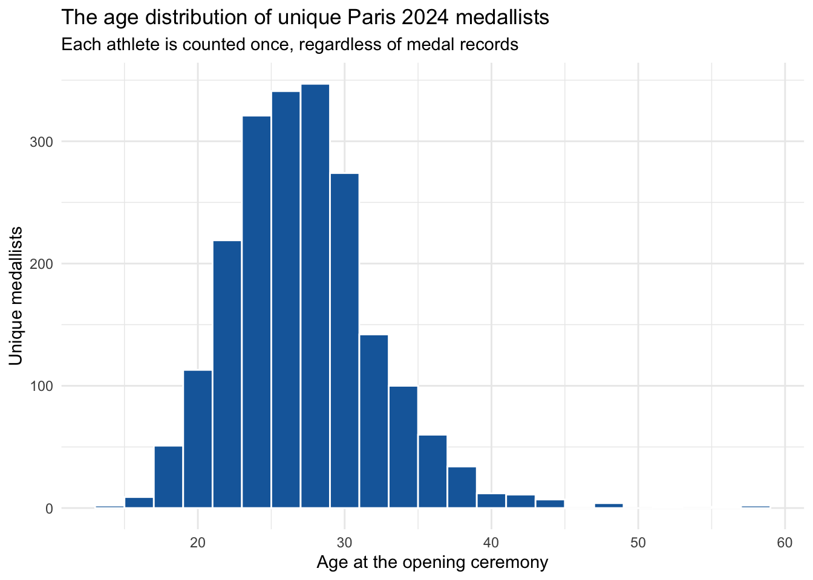
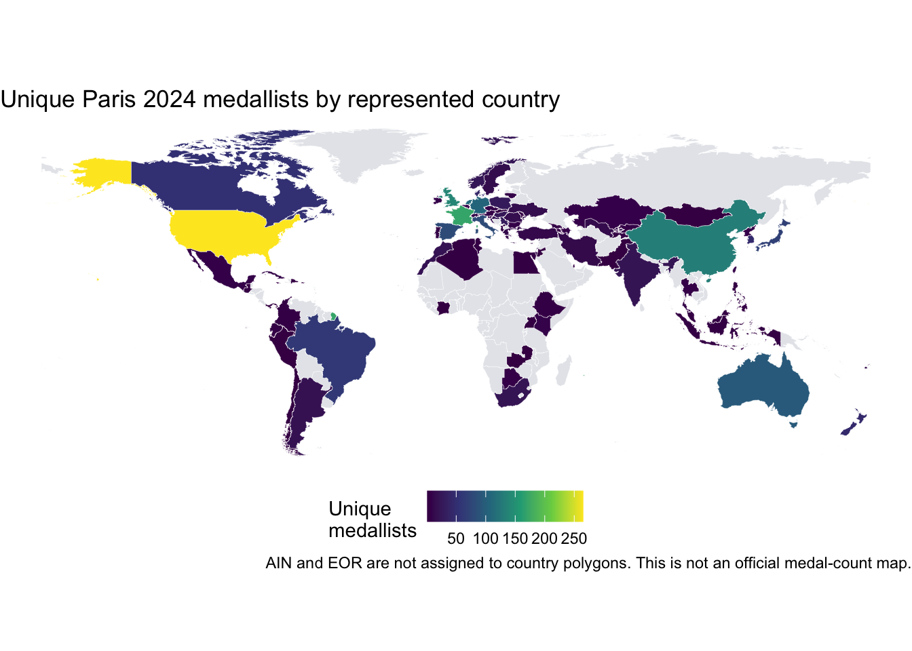

library(tidyverse)
library(sf)
library(rnaturalearth)
library(rnaturalearthdata)
medallists <- read_csv(
"data/medallists.csv",
show_col_types = FALSE
)
dim(medallists)[1] 2315 18n_distinct(medallists$code_athlete)[1] 2054By the end of this case, you should be able to:
library(tidyverse)
library(sf)
library(rnaturalearth)
library(rnaturalearthdata)
medallists <- read_csv(
"data/medallists.csv",
show_col_types = FALSE
)
dim(medallists)[1] 2315 18n_distinct(medallists$code_athlete)[1] 2054The file has 2,315 rows but 2,054 unique athlete codes. One row represents one athlete associated with one medal result. An athlete with several medals has several rows. In a team event, one official medal produces a row for every team member.
Therefore, the following are different measures:
| Measure | Calculation | Meaning |
|---|---|---|
| Athlete-medal records | n() |
Participation in medal results |
| Unique medallists | n_distinct(code_athlete) |
People with at least one medal record |
| Official medals | Event-level medal awards | Not equal to athlete rows in team events |
athlete_medal_records <- medallists |>
count(
code_athlete,
name,
country,
gender,
name = "medal_records",
sort = TRUE
)
athlete_medal_records |>
slice_head(n = 15)The accurate label is “athlete-medal records,” not simply “medals,” because the data represent athletes within medal results.
country_medallists <- medallists |>
filter(!is.na(country), !is.na(code_athlete)) |>
summarise(
unique_medallists = n_distinct(code_athlete),
athlete_medal_records = n(),
.by = country
) |>
arrange(desc(unique_medallists))
country_medallists |>
slice_head(n = 15)This table is useful, but it is not the official medal table. Countries with large team-event rosters can accumulate many athlete-medal records from one official medal.
Counting medal rows by age overweights multi-medallists. Deduplicate athletes first:
athletes <- medallists |>
filter(!is.na(code_athlete)) |>
distinct(code_athlete, .keep_all = TRUE) |>
mutate(
age_at_opening = as.numeric(
as.Date("2024-07-26") - birth_date
) / 365.25
)
athletes |>
summarise(
athletes = n(),
missing_birth_date = sum(is.na(birth_date)),
median_age = median(age_at_opening, na.rm = TRUE),
youngest = min(age_at_opening, na.rm = TRUE),
oldest = max(age_at_opening, na.rm = TRUE)
)athletes |>
filter(!is.na(age_at_opening)) |>
ggplot(aes(x = age_at_opening)) +
geom_histogram(binwidth = 2, fill = "#1769AA", color = "white") +
labs(
title = "The age distribution of unique Paris 2024 medallists",
subtitle = "Each athlete is counted once, regardless of medal records",
x = "Age at the opening ceremony",
y = "Unique medallists"
) +
theme_minimal()
A regression of “number of medal rows by age” on age would mostly describe the shape of this distribution. It would not estimate whether getting older causes an athlete to win more or fewer medals.
The dataset uses International Olympic Committee codes, while Natural Earth provides ISO-style geographic identifiers. Many codes differ: GER versus DEU, SUI versus CHE, and NED versus NLD. A direct code join would drop many countries.
Use published country names with an explicit concordance for the unmatched labels:
country_medallists <- country_medallists |>
mutate(
map_name = recode(
country,
"Great Britain" = "United Kingdom",
"Korea" = "Republic of Korea",
"Hong Kong, China" = "Hong Kong",
"Republic of Moldova" = "Moldova",
"Chinese Taipei" = "Taiwan",
"Cabo Verde" = "Republic of Cabo Verde",
"DPR Korea" = "Dem. Rep. Korea",
"IR Iran" = "Iran",
"Türkiye" = "Turkey",
"Czechia" = "Czech Republic"
)
) |>
filter(!country %in% c("AIN", "EOR"))AIN represents Individual Neutral Athletes and EOR represents the Refugee Olympic Team. Assigning either delegation to one country polygon would be a substantive error, so they remain in the table but are excluded from the map.
world <- ne_countries(scale = "medium", returnclass = "sf")
unmatched <- country_medallists |>
anti_join(
world |>
st_drop_geometry() |>
distinct(name_long),
by = c("map_name" = "name_long")
)
unmatchedThe result should have no rows before the spatial join.
world_medallists <- world |>
filter(name_long != "Antarctica") |>
left_join(
country_medallists,
by = c("name_long" = "map_name"),
relationship = "one-to-one"
)
ggplot(world_medallists) +
geom_sf(aes(fill = unique_medallists), color = "white", linewidth = 0.08) +
scale_fill_viridis_c(na.value = "#E5E7EB") +
labs(
title = "Unique Paris 2024 medallists by represented country",
fill = "Unique\nmedallists",
caption = paste(
"AIN and EOR are not assigned to country polygons.",
"This is not an official medal-count map."
)
) +
theme_void() +
theme(legend.position = "bottom")
Choose one discipline and report three different counts:
Explain why none should automatically be labelled “the number of official medals.” Add one chart at the unique-athlete grain and one validation check using code_athlete.